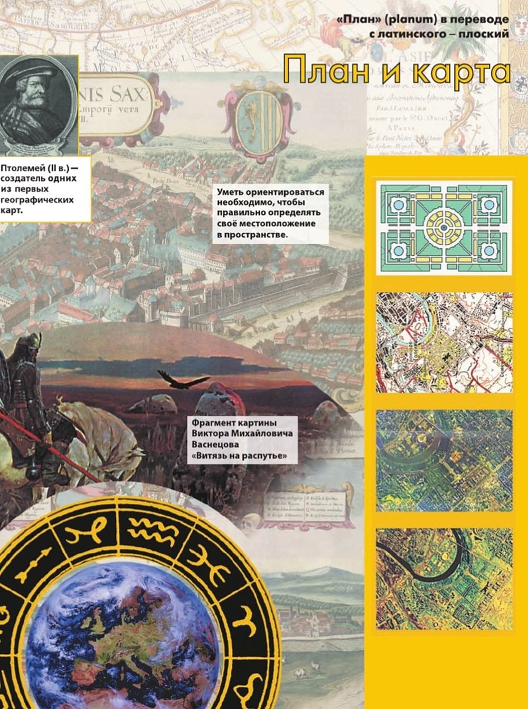
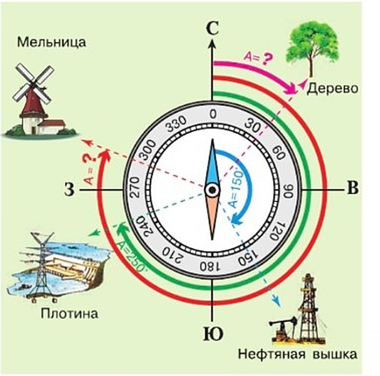
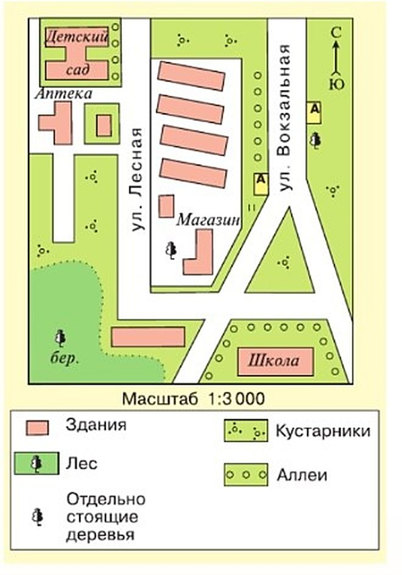
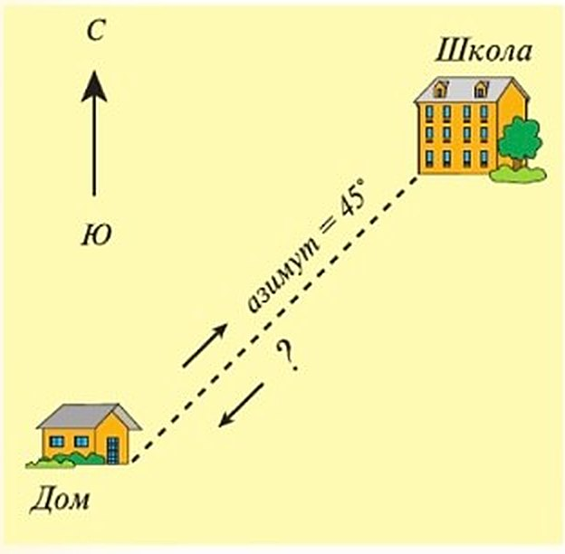
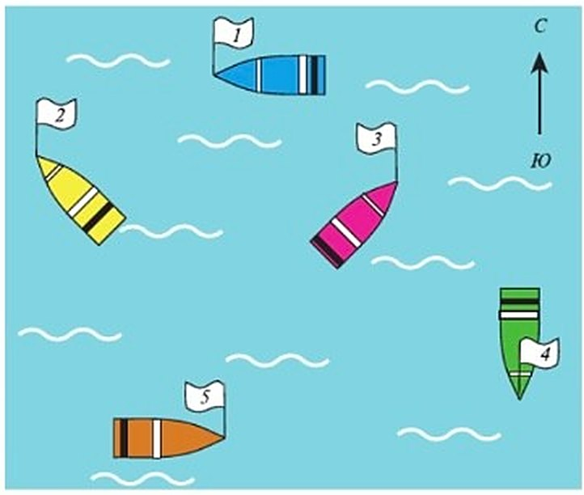

План и карта
Этот параграф открывает новый раздел учебника — «План и карта».
«План» (planum) в переводе с латинского — плоский. На первой странице раздела — старинная карта, гравюра старинного города с высоты и Птолемей. Учебник называет его создателем одних из первых географических карт (ты помнишь его по § 2 и § 8).
Ещё там фрагмент картины Виктора Михайловича Васнецова «Витязь на распутье» и подпись: «Уметь ориентироваться необходимо, чтобы правильно определять своё местоположение в пространстве».
Справа сверху вниз — план сада, план города и два снимка города сверху. Одну и ту же местность можно показать по-разному — об этом весь раздел.
«План» (planum) в переводе с латинского — плоский.
Птолемей (II в.) — создатель одних из первых географических карт.
Уметь ориентироваться необходимо, чтобы правильно определять своё местоположение в пространстве.
Фрагмент картины Виктора Михайловича Васнецова «Витязь на распутье».

- Ориентирование на местности — ты здесь
- Земная поверхность на плане и карте (1)
- Земная поверхность на плане и карте (2)
- Учимся с «Полярной звездой» (2)
- Географическая карта
- Градусная сетка
- Географические координаты (1)
- Географические координаты (2)
- Учимся с «Полярной звездой» (3)
1. Почему на первой странице раздела — «Витязь на распутье»? Как картина связана с ориентированием?
2. Справа на странице — план сада, план города и два снимка сверху. Что у них общего?
Для чего необходимо уметь ориентироваться на местности?
Часто нужно понять, где ты и куда идти. Как найти улицу в незнакомом районе? Как в походе выйти к станции? Как не заблудиться в лесу и найти обратную дорогу?
Иногда помогают ориентиры — заметные предметы: необычный дом, вывеска, дорожный знак, колодец, мост. Или природные: овраг, озеро, раскидистое дерево.
А иногда, как древним мореходам и путешественникам, помогают стороны горизонта и то, где на небе Солнце и звёзды.
Сначала был восток. Его знали с древности: на востоке восходит Солнце. Позже главными стали направления север — юг и запад — восток. Без них не проложить дорогу, не построить мост, не повести корабль и самолёт.
Азимут. Азимут показывает направление на предмет относительно севера. Его отсчитывают от севера по часовой стрелке, в градусах — от 0° до 360°. Север — 0°, восток — 90°, юг — 180°, запад — 270° (рис. 31).
Компас. Примерно измерить азимут можно компасом. Его намагниченная стрелка синим концом всегда показывает на север. Встань лицом к северу: сзади — юг, справа — восток, слева — запад.
Компасом пользуются военные, геодезисты, геологи, моряки. Моряки до сих пор называют стороны горизонта по-нидерландски: норд, зюйд, ост, вест — север, юг, восток, запад.
Ориентирование — это умение определить, где ты находишься, по сторонам горизонта и по разным предметам.
В нашей повседневной жизни очень часто бывает необходимо определить своё местоположение и правильное направление движения. Как найти нужную улицу в незнакомом районе? Как выйти к железнодорожной станции во время похода? Как не заблудиться в лесу и найти обратную дорогу? Иногда нам на помощь приходят хорошо запоминающиеся предметы-ориентиры — отличающийся от других дом, вывеска, дорожный знак, колодец, мост или природный объект — овраг, озеро, раскидистое дерево и т. д. В других случаях нам, как и древним мореходам и путешественникам, поможет знание сторон горизонта и положение Солнца и звёзд на небе.
Ориентир на восток известен с древности. На востоке восходит Солнце. Позднее главными ориентирами стали направления север—юг и запад—восток. Без знания сторон горизонта человек не смог бы освоить окружающую территорию, проложить дороги, построить мосты, управлять кораблями и самолётами.
Для ориентирования на местности полезно знать, что такое азимут. Азимут позволяет определить направление на объект по отношению к северу. Его отсчитывают по ходу часовой стрелки от направления на север. Азимут измеряют в градусах — от 0° до 360°. Азимут на север соответствует 0°, на восток — 90°, на юг — 180°, на запад — 270° (рис. 31).
Приблизительно азимут можно измерить с помощью компаса. Намагниченная стрелка компаса окрашенным (синим) концом всегда направлена в сторону севера. Если встать лицом к северу, сзади будет юг, справа — восток, а слева — запад.
Компас используют военные, геодезисты, геологи, моряки. В навигации до сих пор используются нидерландские названия сторон горизонта: норд, зюйд, ост, вест (север, юг, восток, запад).

▲ Определи азимут на дерево и на мельницу (задание 6 в конце параграфа).
Ориентирование — умение определять своё местоположение на местности относительно сторон горизонта и различных объектов.
Азимут — угол между направлением на север и направлением на любой объект по ходу часовой стрелки.
Уметь ориентироваться необходимо, чтобы правильно определять своё местоположение в пространстве.
3. Почему азимут на запад — 270°, а не 90°? Ведь от севера до запада всего четверть круга.
4. Ты стоишь лицом на север. Где будет Солнце в полдень? А твоя тень?
5. Когда удобнее ориентиры, а когда — стороны горизонта?
Для чего человеку необходим план местности?
Планами люди пользуются очень давно. В поисках пищи и материалов для орудий труда люди ходили по окрестностям и запоминали, что где. Эти «картинки в памяти» рисовали палочками, костями, камнями на скалах и дереве. А когда появилась письменность — на папирусе, бумаге, глиняных табличках.
Сначала это были простые рисунки маленьких участков: стоянки, реки, озёра, отдельные деревья. Потом на план стали наносить всё больше. Планы становились сложнее и охватывали всё бо́льшие территории.
Зачем план сегодня? План показывает небольшой участок и помогает на нём ориентироваться: что где стоит, что рядом с чем и какого оно примерно размера (рис. 32). Мебель в квартире расставляют по плану комнат. А с планом города легко не заблудиться на экскурсии.
Большие территории. Для них нужны топографические карты, аэрофотоснимки и космические снимки. Перед тем как строить дома, дороги, заводы, местность изучают очень подробно. Поэтому первыми на место выезжают геодезисты и топографы.
План местности — это чертёж небольшого участка земной поверхности, сделанный в уменьшенном виде условными знаками.
Издавна человек в своей хозяйственной деятельности использовал план местности. Перемещение по окрестностям в поисках пищи и орудий труда вырабатывало наблюдательность. В памяти закреплялись зрительные образы окружающего пространства. Эти образы с помощью палочек, костей, камней изображали на скалах, дереве, а затем, после возникновения письменности, — на папирусе, бумаге, глиняных табличках. Сначала это были примитивные рисунки небольших участков окружающей территории. На них изображались места стоянок, реки, озёра, отдельные деревья. Постепенно люди пытались нанести на план всё больше информации. Планы становились сложнее и охватывали всё бо́льшие территории.
План даёт представление о небольшом участке территории и помогает ориентироваться на нём. По плану можно определить взаимное расположение объектов и их приблизительные размеры. В повседневной жизни мы часто пользуемся разными видами планов (рис. 32). Чтобы удобно расставить мебель в квартире, мы рисуем план комнат. Перед экскурсией мы приобретаем план города и, изучив его, свободно ориентируемся в незнакомом месте.
Для решения сложных задач на больших территориях используют топографические (от греческого слова топос — место) карты, аэрофотоснимки и космические снимки. Например, для проектирования и строительства домов, дорог, заводов необходимо детальное изучение местности. Поэтому на место будущих работ первыми выезжают геодезисты и топографы.

▲ Найди на плане школу и детский сад. Какой из них севернее?
План местности — это чертёж небольшого участка земной поверхности, выполненный в уменьшенном виде условными знаками.
Местность на плане изображается: 1) на плоскости; 2) в уменьшенном виде без искажений; 3) с помощью условных знаков.
План местности позволяет на небольшом участке территории определить расположение объектов относительно друг друга и сторон горизонта, их размеры и расстояние между ними.
6. Чем план отличается от обычного рисунка местности?
7. Для строительства дороги одного плана мало. Почему?
8. Что рисовали на первых планах и почему именно это?
Итоги параграфа
- Назовите все основные и промежуточные стороны горизонта. (Найдите в Интернете иллюстрацию, на которой показаны промежуточные стороны горизонта.)
- Что означает умение ориентироваться?
- Что называется азимутом? Азимут может изменяться: а) от 0° до 45°; б) от 0° до 90°; в) от 0° до 180°; г) от 0° до 360°.
- На Северном полюсе любое из направлений будет: а) северным; б) южным; в) западным; г) восточным.
- Что называется планом местности?
- Используя рисунок 31 на с. 44, определите азимут на дерево, нефтяную вышку, плотину, мельницу.
- Прочитайте фрагмент текста параграфа «Для чего человеку необходим план местности?» и на его основе составьте развёрнутый план этого фрагмента.
- Рассмотрите рисунок 33. В каком направлении вы будете возвращаться домой, если в школу вы шли по азимуту 45°: а) на юг; б) на северо-запад; в) на северо-восток; г) на запад; д) на юго-запад?
- Рассмотрите рисунок 34. В каком направлении движется каждая лодка?


Проверь себя
Север
Азимут отсчитывают от севера.
Восток
Четверть круга по часовой стрелке.
Юг
Полкруга.
Запад
Три четверти круга по часовой стрелке.
Норд
Норд по-нидерландски — север.
Ост
Ост — восток.
Зюйд
Зюйд — юг.
Вест
Вест — запад.
Расставить мебель в квартире
План комнат — небольшой участок.
Не заблудиться на экскурсии в незнакомом городе
План города.
Найти дорогу от дома до «Пятёрочки»
Небольшой участок — хватит плана.
Построить дорогу через большую территорию
Большая территория, нужно подробное изучение.
Спроектировать завод
Перед стройкой местность изучают очень подробно.
Изучить местность для новой железной дороги
Сначала выезжают геодезисты и топографы.
1. От какого направления отсчитывают азимут?
2. Азимут на восток — это…
3. Как называется сторона горизонта между севером и востоком?
4. Куда показывает синий конец стрелки компаса?
5. Ты шла по азимуту 90°. По какому азимуту вернуться обратно?
6. Чем план местности отличается от рисунка?
Расскажи вслух
Зачем уметь ориентироваться
- Определить, где ты, и выбрать направление: найти улицу, станцию, дорогу из леса.
- Помогают ориентиры: заметные дома, вывески, мосты, деревья, овраги, озёра.
- И стороны горизонта, Солнце и звёзды — как у древних мореходов.
Азимут и компас
- Азимут — угол от севера по часовой стрелке до предмета, от 0° до 360°.
- Север — 0°, восток — 90°, юг — 180°, запад — 270°.
- Компас: синий конец стрелки — на север; моряки говорят норд, зюйд, ост, вест.
Как появились планы
- Люди запоминали окрестности в поисках пищи и материалов для орудий.
- Рисовали на скалах и дереве, потом на папирусе, бумаге, глиняных табличках.
- Сначала простые рисунки — стоянки, реки, озёра; потом планы стали сложнее и больше.
Что такое план местности
- Чертёж небольшого участка в уменьшенном виде условными знаками.
- На плоскости, в уменьшенном виде без искажений, условными знаками.
- По плану видно, что где, что рядом с чем, какого размера; для больших территорий — топографические карты и снимки.